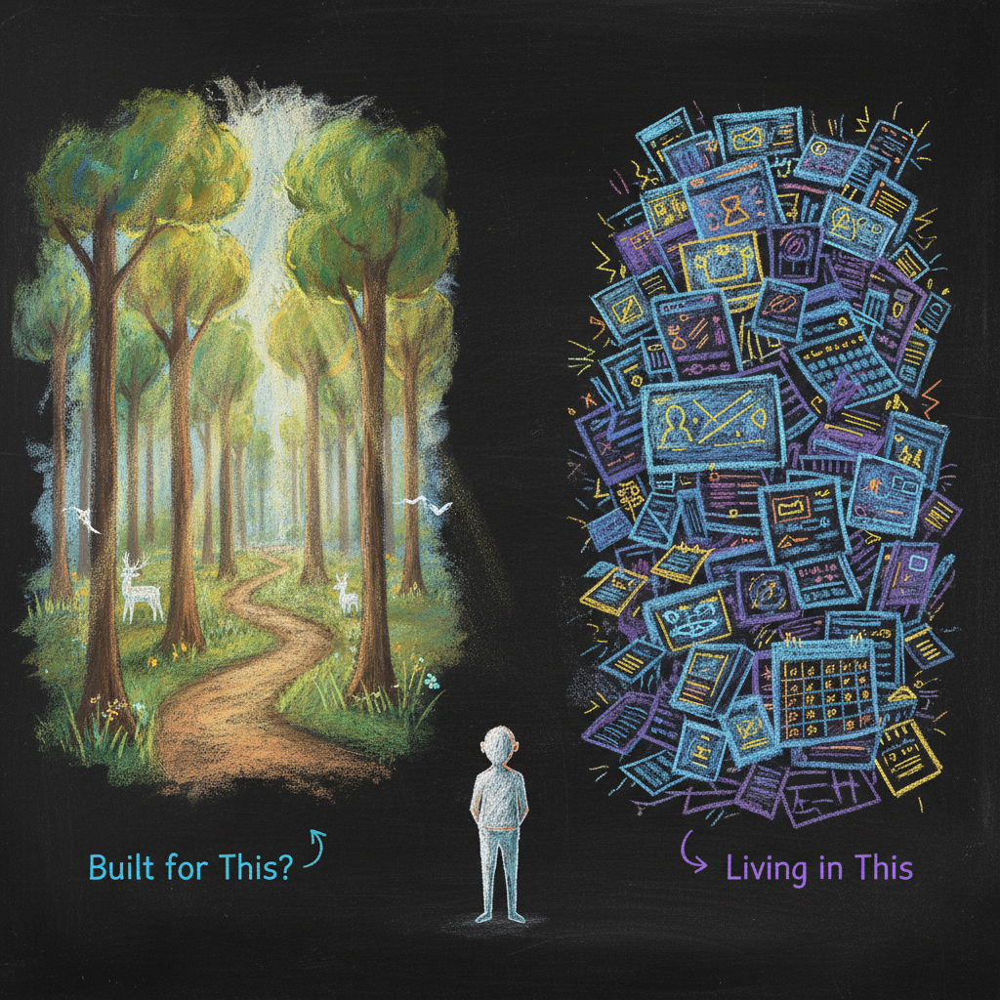
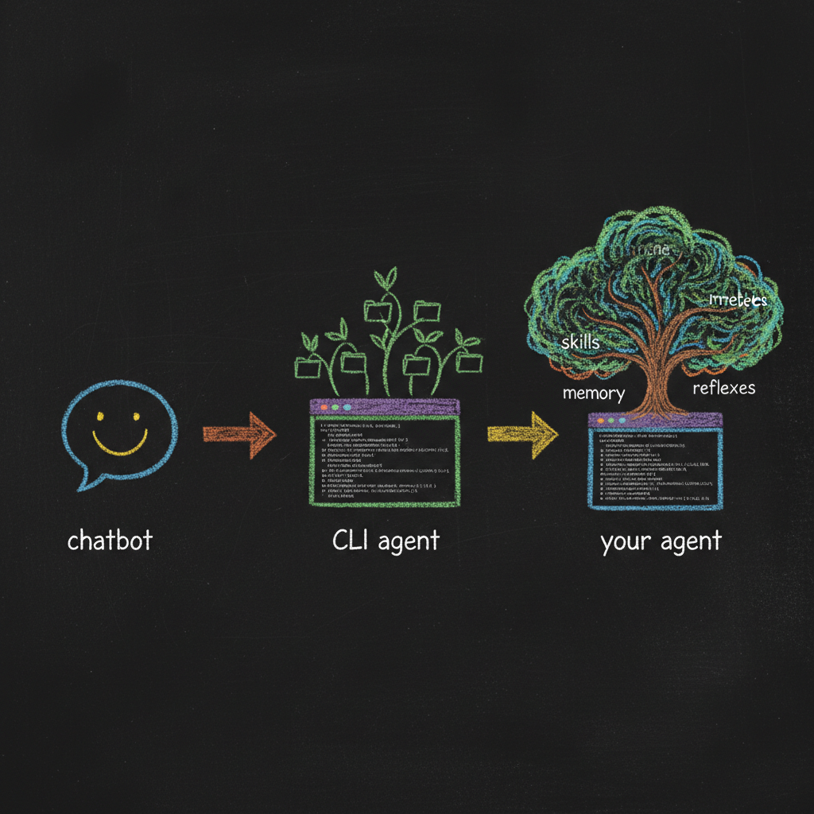
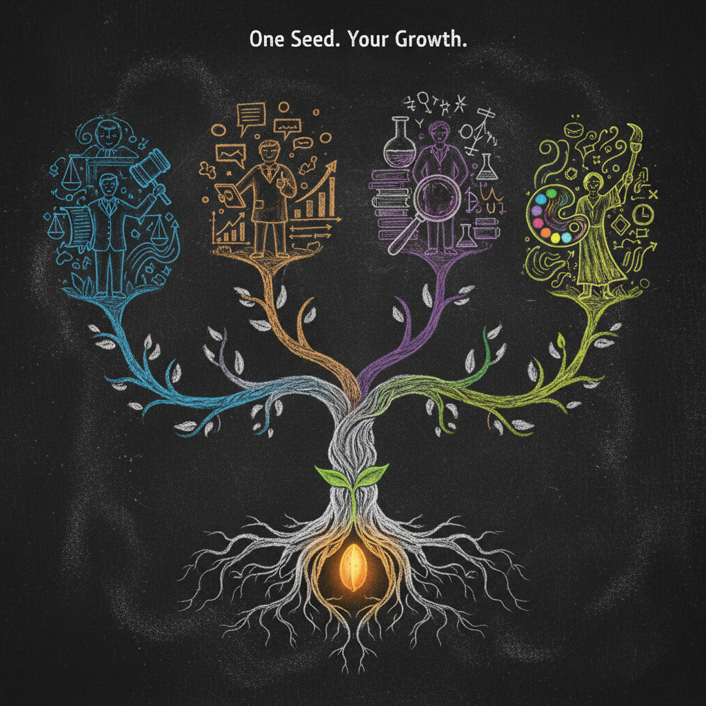

The Academy
LEARN THE ARCHITECTURE. OWN THE HARNESS.
Hadosh Academy is an open technical and educational project about building durable, inspectable agent harnesses that remain under the control of the people who use them.
New here? Begin with Start Here for a five-minute introduction.

Why an Academy
AI tools and models change quickly, but the harder problem is more stable: how does a person turn general model capability into a working system that remembers, coordinates, verifies, learns from experience, and remains understandable?
Hadosh Academy focuses on that layer. The goal is not to make every professional a software engineer. It is to make the important abstractions understandable enough that people can describe, inspect, and evolve their own harnesses while CLI agents handle more of the low-level implementation.
The user learns the anatomy, not the syntax.

From Chatbot to Digital Cortex
A chatbot is a conversation. A CLI agent adds tools and access to a local environment. A harness adds the durable cognitive structure around that runtime: memory, jobs, behavioral controls, authority, interfaces, verification, and learned working methods.
The long-term idea is a digital cortex that becomes specific to the user while remaining portable across model providers and runtimes. The model can change; the accumulated harness stays inspectable and user-owned.
The model is the engine. The harness is the durable layer.

The Seed Program
The public work has one reference implementation and two public reimplementation paths.
Claude Seed — Reference
The first-generation personal harness where jobs, OPEVC, plugins, local working memory, guards, verification, condensation, and governed self-modification were developed together through sustained use.
Request technical reference access →Seed Agent — Codex
The primary public implementation. Codex supplies the runtime while the user-owned cognitive layer is rebuilt from the behavioral lessons documented in the reference and technical essays.
Explore Seed Agent →Q-Seed — Qwen Code
A sibling public experiment where a user-controlled Qwen Code fork becomes part of the owned stack beneath the inspectable cognitive layer.
Explore Q-Seed →Two Valid Paths to Ownership
Start from a mature public Seed
Clone an established base, learn its architecture, then cultivate its cognition and jobs around your own work.
Build a new harness with the user or team
Begin from a thinner substrate, use earlier harnesses as pattern libraries, and let the new architecture form around the people and work it is meant to support.
The stable goal is ownership and architectural literacy, not forcing everyone into the same template.
The Writing
The public writing serves two roles. Part 1 develops the conceptual argument. The deeper technical series documents the first-generation Claude Seed as a worked implementation that the newer public projects can study and reinterpret.

Different People, Different Harnesses
A tax attorney, a filmmaker, a scientist, and a startup team may share useful abstractions without ending up with identical systems. Some will clone a mature Seed; others will cultivate a harness from scratch.
The work of the Academy is to make the reusable concepts legible while leaving room for the implementation to become specific to the person, team, and runtime.
Beyond One User
The Projects portfolio tests how the same ownership questions change across individual users, small groups, families, and larger collectives. The interface evolves from CLI to dashboard or persistent web world to lightweight email participation, while shared memory and authority become more important as the group grows.
Explore the Projects
Hadi Nayebi
Scientist
I value the scientific method above all else. With a PhD in Organic Chemistry and Structural Biology, I've spent years in the pursuit of understanding how things work at a fundamental level.
Creator
I want to build a space where anyone can use Agentic technology. My goal is to create an ecosystem that helps people from all backgrounds build their own tools and simplify their work.
Explorer
I love traveling and discovering new places. Currently, I'm exploring the cities and landscapes of Michigan, Indiana, and Ohio, finding inspiration in the world around me.